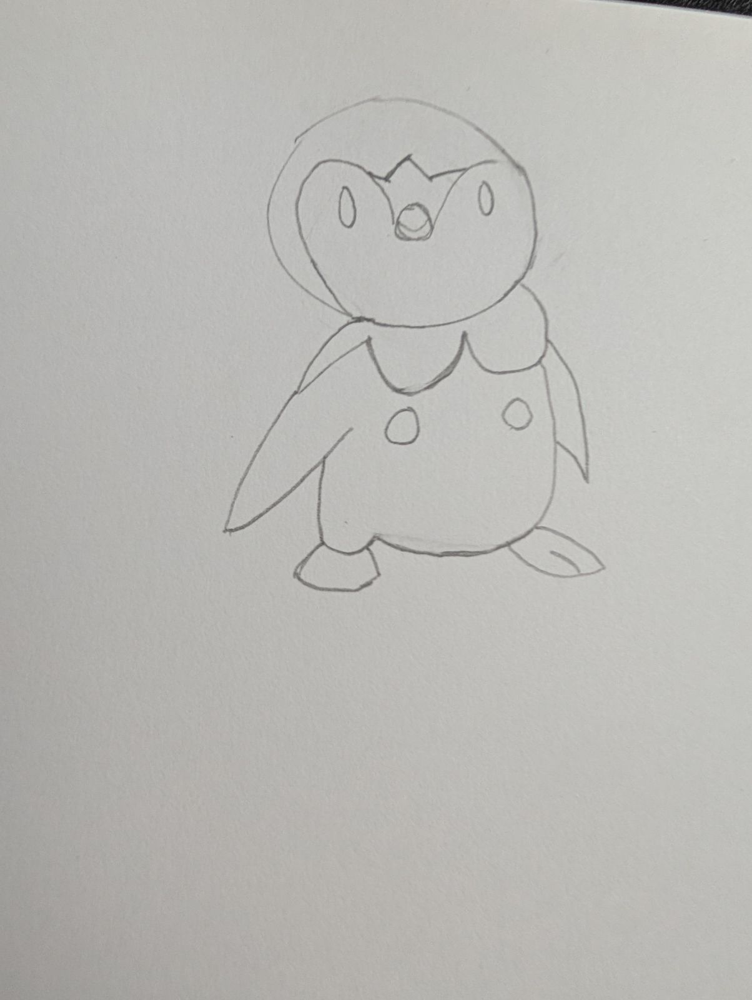
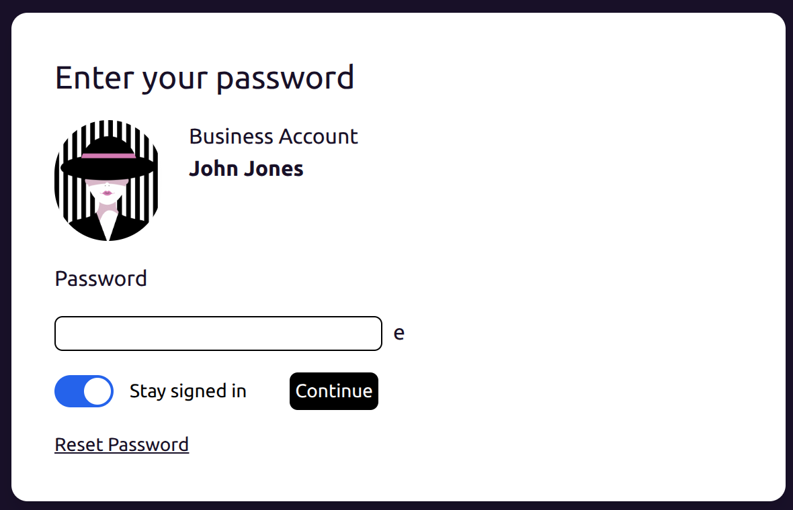
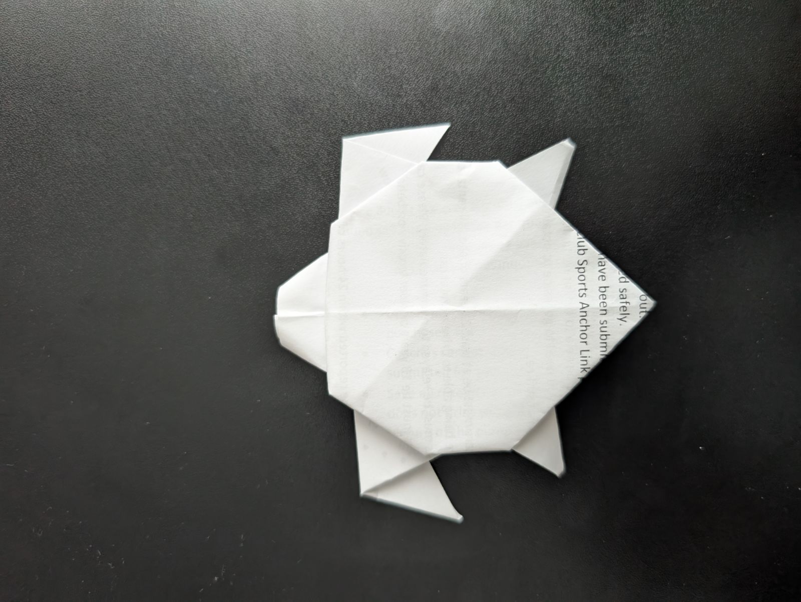
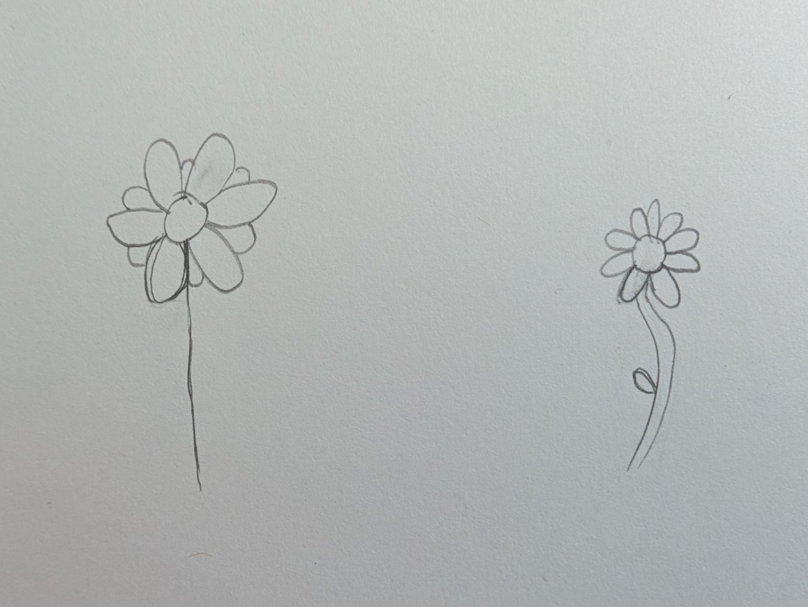
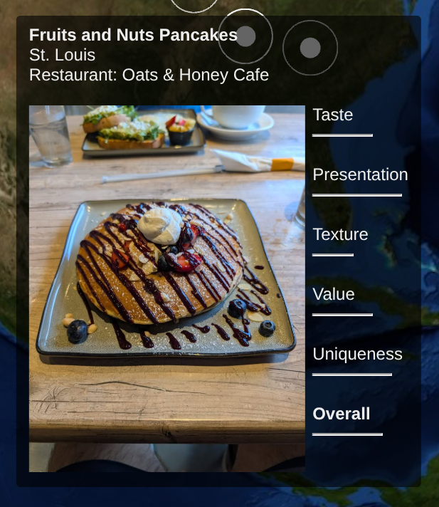

My Daily Habit (Everyday Since 9/15/25)
9/15/2025-Now
Every day, I work towards improving myself at some task. Written here are my results...
Week of 9/29/25
Monday:
- null
- Run
Tuesday:
- Wrote A Blog About AI
- null
Wednesday:
- null
- Bike ride
Thursday:
- null
- Bike ride
Friday:
- null
- Wow, another bike ride
Saturday:
- null
- Run
Sunday:
- Wrote and published this post and planned next week’s tasks
- Threw frisbee and went on a walk
Overall:
This week was not great. I’m happy about the consistent exercise, but I need to do better otherwise. I’m going to start setting alarms so that I have enough time in the morning. I normally don’t like alarms, and prefer that I wake up naturally, but I’m running out of time.
Week of 9/22/25
Monday:
- null
- null
Tuesday:
- Wrote a blog post to introduce A Pancake Lover, my social media account dedicated to pancakes
- Went on a recovery run after the ultimate frisbee tournament last weekend
Wednesday:
- Experimented using cadquery, a python library to make 3D models
Code
- 3 mile walk
Thursday:
- Drew Piplup from Pokemon

- Ran a mile
Friday:
- Edited a pancake cooking video (first time making cooking video)
- 1 mile run
Saturday:
- null
- null
Sunday:
- Wrote and published this post and planned next week’s tasks
- Went on a hike
For next week:
I had a pretty busy week, so I’m happy that I was able to accomplish my goals in 5 days this week. I also want to start my routine right after I wake up.
Week of 9/15/25: A Tough Beginning
Monday:
I made a login password page based on a challenge on icodethis.com.
Mine: 
Ex:
Here's my code: https://github.com/mariusschueller/Marius-Mornings/tree/main/morning_challenges/9.15
I also went on a 10 minute walk.
Tuesday:
Today I made an origami sea turtle.

I went on a 3 mile run as well.
Wednesday:
Today I had a late wakeup but drew a few flowers, but you better believe I went on another walk.

Thursday:
Today was similar to Wednesday but no activity, but at least I got a walk in.
Friday:
Today I coded a rating visualization for my pancake site. Pretty happy with the results and perfectly visualizes my rating system.

Unfortunately, I was travelling all day so I wan't able to exercise because I was travelling all day.
Saturday:
I wasn't able to practice a new skill because I played in an ultimate frisbee tournament most of the day, and spent the rest hanging out with the team.
Sunday:
Today I updated this page and planned out the next week of activities. For exercise, today was day 2 of the ultimate frisbee tournament.
For next week: I'm happy that I was able to a few days and I want to build off of that. My focus is on being able to consistently accomplish my daily habit. I plan to set an alarm that'll give me enough time in the morning.
- Marius